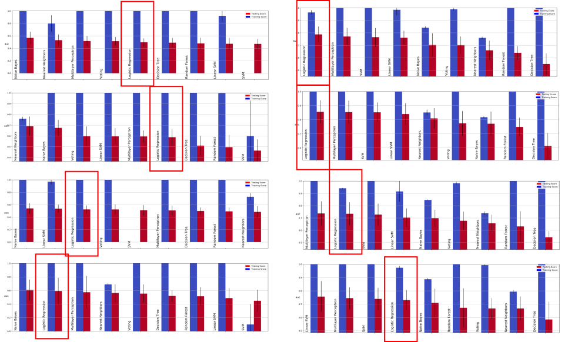
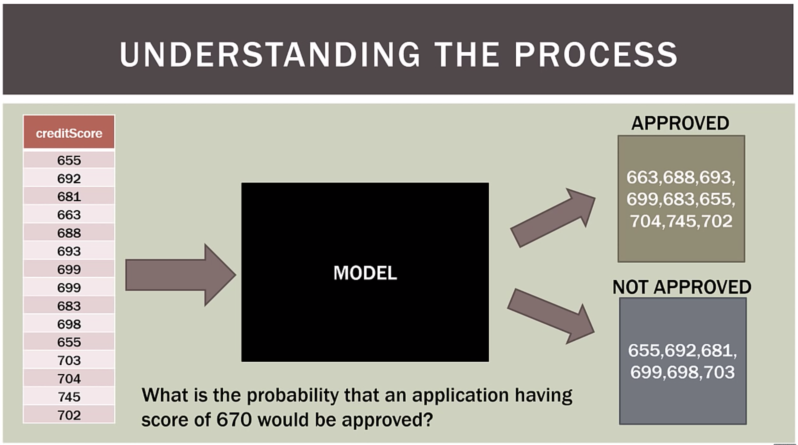
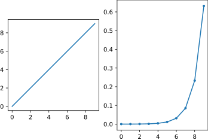
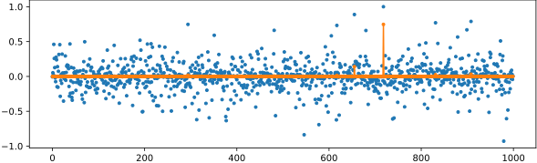
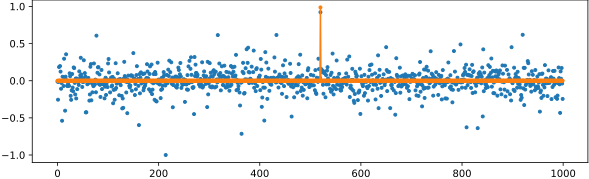
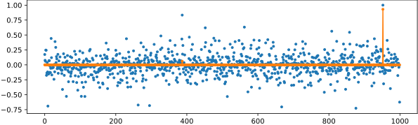
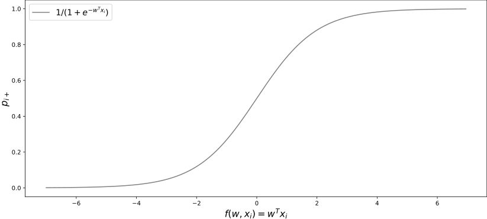

Advanced Machine Learning
10: Logistic Regression
Outline for the lecture
- Naïve Bayes recap
- Defining Logistic Regression
- Solving Logistic Regression
Naïve Bayes (recap)
Properties and assumptions
Features $X_i$ and $X_j$ are conditionally independent given the class label $Y$
$\prob{P}{X_i,X_j|Y} = \prob{P}{X_i|Y}\prob{P}{X_j|Y}$
$\prob{P}{X_1,\dots, X_d|Y} = \prod_{i=1}^d \prob{P}{X_i|Y}$
$f_{NB}(\vec{x}) = \underset{y}{\argmax} \prod_{i=1}^d \prob{P}{x_i|y}\prob{P}{y}$
Assume a parametric form for $\prob{P}{X_j|Y}$ and $\prob{P}{Y}$
Estimate MLE parameters for these functions.
Plug in and operate the NB classifier
Plug in and operate the NB classifier
Gaussian Naïve Bayes
$Y \sim \mbox{Bernoulli}(\pi)$ $\prob{P}{X_i = \vec{x}_i|Y = y_k} = \frac{1}{\sigma_{ik}\sqrt{2\pi}} e^{-\frac{(\vec{x}_i - \mu_{ik})^2}{2\sigma_{ik}^2}}$Different mean and variance for each class $k$ and each pixel $i$.$^*$
Let's assume variance is independent of class: $\sigma_{ik} = \sigma_{i}$
Gaussian NB as a linear classifier
$\prob{P}{X_i = \vec{x}_i|Y = y_k} = \frac{1}{\sigma_{ik}\sqrt{2\pi}} e^{-\frac{(\vec{x}_i - \mu_{ik})^2}{2\sigma_{ik}^2}}$
- For simplicity consider 2 class problem $\sigma_{i,0} = \sigma_{i, 1}$
- Decision boundary:
$\prod_{i=1}^d \prob{P}{x_i|y=0}\prob{P}{y=0} = \prod_{i=1}^d \prob{P}{x_i|y=1}\prob{P}{y=1}$
- Equivalently:
$\log\frac{\prod_{i=1}^d \prob{P}{x_i|y=0}\prob{P}{y=0}}{\prod_{i=1}^d \prob{P}{x_i|y=1}\prob{P}{y=1}} = 0$ $\log\frac{\prod_{i=1}^d \prob{P}{x_i|y=0}\prob{P}{y=0}}{\prod_{i=1}^d \prob{P}{x_i|y=1}\prob{P}{y=1}}= \log\frac{1 - \pi}{\pi} +\sum_{i=1}^d \log\frac{\prob{P}{x_i|y=0}}{\prob{P}{x_i|y=1}}$
Gaussian NB as a linear classifier
- Decision boundary:
$\log\frac{\prod_{i=1}^d \prob{P}{x_i|y=0}\prob{P}{y=0}}{\prod_{i=1}^d \prob{P}{x_i|y=1}\prob{P}{y=1}} = 0$ $\log\frac{\prod_{i=1}^d \prob{P}{x_i|y=0}\prob{P}{y=0}}{\prod_{i=1}^d \prob{P}{x_i|y=1}\prob{P}{y=1}}= \log\frac{1 - \pi}{\pi} +\sum_{i=1}^d \log\frac{\prob{P}{x_i|y=0}}{\prob{P}{x_i|y=1}}$
- If you do the algebra:
$\log\frac{1 - \pi}{\pi} +\sum_{i=1}^d \frac{\mu^2_{i,1} - \mu^2_{i,0}}{2\sigma_i^2} + \sum_{i=1}^d \frac{\mu_{i,1} - \mu_{i,0}}{2\sigma_i^2} x_i = w_0 + \sum_{i=1}^d w_i x_i$
Generative vs. Discriminative
- Generative classifiers (such as Naïve Bayes)
- Assume a functional form for $\prob{P}{x,y}$ (or $\prob{P}{x|y}$ and $\prob{P}{y}$)
- Estimate parameters of $\prob{P}{x|y}$ and $\prob{P}{y}$ from training data
- Able to generate samples from a trained model
- Note:
$\underset{y}{\argmax} \prob{P}{x|y}\prob{P}{y} = \underset{y}{\argmax} \prob{P}{y|x}$
- Let's learn $\prob{P}{y|x}$ directly!
- Or learn the decision boundary directly
Defining Logistic regression
And the winner is...

Example
Problem definition
Logistic regression seeks to- Model the probability of an event occuring depending on the values of the independent variables, which can be categorical or numerical
- Estimate the probability that an event occurs for a randomly selected observation versus the probability that the event does not occur
- Predict the effect of a series of variables on a binary response variable
- Classify observations by estimating the probability that an observation is in a particular category (e.g. approved or not approved for a loan)
Our data in 1D
Sir David Cox
Why not SVM?
Odds
| Probability | Corresponding odds |
|---|---|
| 0.5 | 50:50 or 1 |
| 0.9 | 90:10 or 9 |
| 0.999 | 999:1 or 999 |
| 0.01 | 1:99 or 0.0101 |
| 0.001 | 1:999 or 0.001001 |
Log-Odds
| Log-odds | Probability |
|---|---|
| 0 | 0.5 |
| 2.19 | 0.9 |
| 6.9 | 0.999 |
| -4.6 | 0.01 |
| -6.9 | 0.001 |
Linear Fit to Log-Odds
\begin{array}{ll} \log\left(\frac{p_+}{1-p_+}\right) &= kx + b\\ &= w_1 x + w_0 \\ &= \vec{w}^T\vec{x} \\ \end{array}
\begin{array}{ll}
\log\left(\frac{\prob{P}{G=1|X=x}}{\prob{P}{G=K|X=x}}\right) &= \vec{w}_1^T\vec{x}\\
\log\left(\frac{\prob{P}{G=2|X=x}}{\prob{P}{G=K|X=x}}\right) &= \vec{w}_2^T\vec{x}\\
&\vdots \\
\log\left(\frac{\prob{P}{G=K-1|X=x}}{\prob{P}{G=K|X=x}}\right) &= \vec{w}_{K-1}^T\vec{x}\\
\end{array}
What's the probability?
- $\log\left(\frac{p_+}{1-p_+}\right) = \vec{w}^T\vec{x}$
- $\frac{p_+}{1-p_+} = e^{\vec{w}^T\vec{x}}$
- $p_+ = e^{\vec{w}^T\vec{x}}(1-p_+)$
- $p_+ = e^{\vec{w}^T\vec{x}}-p_+e^{\vec{w}^T\vec{x}}$
- $p_++p_+e^{\vec{w}^T\vec{x}} = e^{\vec{w}^T\vec{x}}$
- $p_+(1+e^{\vec{w}^T\vec{x}}) = e^{\vec{w}^T\vec{x}}$
- $p_+ = \frac{e^{\vec{w}^T\vec{x}}}{1+e^{\vec{w}^T\vec{x}}}$
- $p_+ = \frac{1}{1+e^{-\vec{w}^T\vec{x}}}$

What's the probability when it is interesting?
- $\prob{P}{G=k|X=x} = \frac{e^{\vec{w}_k^T\vec{x}}}{1+\sum_i^{K-1}e^{\vec{w}_i^T\vec{x}}}, k = 1, \dots, K-1$
- $\prob{P}{G=K|X=x} = \frac{1}{1+\sum_i^{K-1}e^{\vec{w}_i^T\vec{x}}}$
Softmax!
\[ \sigma(\mathbf{z})_i = \frac{e^{z_i}}{\sum_{j=1}^K e^{z_j}} \] 
\[
\sigma(\mathbf{z})_i = \frac{e^{z_i}}{\sum_{j=1}^K e^{z_j}}
\]
Softmax!
  Solving Logistic regression
An alternative perspective on log odds
What's posterior probability of class $c_1$ given a sample $\vec{x}$?
\[
\prob{p}{c_1|\vec{x}} = \frac{\prob{p}{\vec{x}|c_1}\prob{p}{c_1}}{\prob{p}{\vec{x}|c_1}\prob{p}{c_1} + \prob{p}{\vec{x}|c_2}\prob{p}{c_2}}
\]
Let's introduce $a = \ln\frac{\prob{p}{\vec{x}|c_1}\prob{p}{c_1}}{\prob{p}{\vec{x}|c_2}\prob{p}{c_2}}$
\[
\prob{p}{c_1|\vec{x}} = \frac{1}{1+\exp{(-a)}} = \sigma(a)
\]
Logistic Sigmoid
Nice properties of logistic sigmoid|
\begin{align} \sigma{(-a)} &= 1 - \sigma{(a)}\\ \end{align} $a = \ln{(\frac{\sigma}{1 - \sigma})} \color{#dc322f}{\text{ log odds???}}$
$\frac{d\sigma}{d a} =\sigma(1-\sigma)$
Maximum likelihood estimate
\begin{align} {\cal l}(\vec{w}) &= \underset{\vec{w}}{\argmax} \prod_i^N P_{\vec{w}}(c_k | x_i)\\ {\cal l}(\vec{w}) &= \underset{\vec{w}}{\argmax} \prod_{i:\vec{x}_i \in c_1}^N P_{\vec{w}}(c_1 | x_i)\prod_{i:\vec{x}_i \in c_2}^N P_{\vec{w}}(c_2 | x_i)\\ {\cal l}(\vec{w}) &= \underset{\vec{w}}{\argmax} \prod_{i:\vec{x}_i \in c_1}^N \sigma \prod_{i:\vec{x}_i \in c_2}^N (1 - \sigma)\\ {\cal l}(\vec{w}) &= \underset{\vec{w}}{\argmax} \prod_i^N \sigma_i^{l_1}(1 - \sigma_i)^{1-l_1}\\ \end{align}Negative Log likelihood
\begin{align} {\cal l}(\vec{w}) &= \underset{\vec{w}}{\argmax} \prod_i^N \sigma_i^{l_1}(1 - \sigma_i)^{1-l_1}\\ \ell(\vec{w}) &= - \sum_i^N ({l_i}\ln(\sigma_i) + (1-l_i)\ln(1 - \sigma_i))\\ \end{align}Cross Entropy (recap)
\[ H_{p,q} = -\sum_{i=1}^n p_X(x_i) \log q_X(x_i) \]
Negative Log likelihood: How to solve for $\vec{w}$?
\begin{align} \ell(\vec{w}) &= - \sum_i^N ({l_i}\ln(\sigma_i) + (1-l_i)\ln(1 - \sigma_i))\\ \nabla_{\vec{w}} \ell &= \sum_i^N (\sigma_i - l_i)\vec{x}_i\\ \nabla_{\vec{w}} \ell &= {\bf X}^T (\vec{\sigma} - \vec{l}) \stackrel{\text{set}}{=} 0\\ \end{align}Taylor expansion
\[ f(x) = f(a)+\frac {f^\prime(a)}{1!} (x-a)+ \frac{f''(a)}{2!} (x-a)^2+ \cdots \] \[ f(x) = \sum_{n=0} ^ {\infty} \frac {f^{(n)}(a)}{n!} (x-a)^{n} \]Taylor expansion

Newton-Raphson method
\begin{align} \ell(\vec{w} + \Delta) & = \ell(\vec{w}) + \ell^{\prime}(\vec{w})\Delta + \frac{1}{2}\ell^{\prime\prime}(\vec{w})\Delta^2\\ \frac{\partial \ell(\vec{w} + \Delta)}{\partial \Delta} & \stackrel{set}{=} 0 \\ \ell^{\prime}(\vec{w}) + \ell^{\prime\prime}(\vec{w})\Delta &= 0\\ \Delta &= - \frac{\ell^{\prime}(\vec{w})}{\ell^{\prime\prime}(\vec{w})}\\ \vec{w}_{new} & = \vec{w}_{old} + \Delta = \vec{w}_{old}- \frac{\ell^{\prime}(\vec{w})}{\ell^{\prime\prime}(\vec{w})}\\ \vec{w}_{new} & = \vec{w}_{old} - {\bf H}^{-1}\nabla_\vec{w}\ell \end{align}Hessian
\[ \mathbf H = \begin{bmatrix} \dfrac{\partial^2 f}{\partial w_1^2} & \dfrac{\partial^2 f}{\partial w_1\,\partial w_2} & \cdots & \dfrac{\partial^2 f}{\partial w_1\,\partial w_n} \\[2.2ex] \dfrac{\partial^2 f}{\partial w_2\,\partial w_1} & \dfrac{\partial^2 f}{\partial w_2^2} & \cdots & \dfrac{\partial^2 f}{\partial w_2\,\partial w_n} \\[2.2ex] \vdots & \vdots & \ddots & \vdots \\[2.2ex] \dfrac{\partial^2 f}{\partial w_n\,\partial w_1} & \dfrac{\partial^2 f}{\partial w_n\,\partial w_2} & \cdots & \dfrac{\partial^2 f}{\partial w_n^2} \end{bmatrix} \]Newton-Raphson update for linear regression
$f(\vec{w}) = \sum_{i}^{n} (\vec{w}^T\vec{x}_i - y_i)^2$
Let us write in matrix form:
$f(\vec{w}) = (\bf{X}\vec{w} - \vec{y})^T(\bf{X}\vec{w} - \vec{y})$
$f(\vec{w}) = (\bf{X}\vec{w} - \vec{y})^T(\bf{X}\vec{w} - \vec{y})$
The gradient:
$\nabla_\vec{w}f = \bf{X}^T\bf{X}\vec{w} - \bf{X}^T\vec{y}$
$\nabla_\vec{w}f = \bf{X}^T\bf{X}\vec{w} - \bf{X}^T\vec{y}$
The Hessian:
$\nabla^2_\vec{w}f = \bf{X}^T\bf{X}$
$\nabla^2_\vec{w}f = \bf{X}^T\bf{X}$
$\vec{w}_{new} = \vec{w}_{old} - (\bf{X}^T\bf{X})^{-1}(\bf{X}^T\bf{X}\vec{w}_{old} - \bf{X}^T\vec{y})$
$\vec{w}_{new} = \vec{w}_{old} - \vec{w}_{old} + (\bf{X}^T\bf{X})^{-1}\bf{X}^T\vec{y}$
$\vec{w}_{new} = (\bf{X}^T\bf{X})^{-1}\bf{X}^T\vec{y}$
Newton-Raphson update for logistic regression
- $\nabla_{\vec{w}} \ell = {\bf X}^T (\vec{\sigma} - \vec{l})$
- ${\bf H} = \nabla\nabla_{\vec{w}} \ell = {\bf X}^T{\bf W}{\bf X}$
- ${\bf W}_{i,i} = \sigma_i(1-\sigma_i)$
- $\vec{w}_{new} = \vec{w}_{old} - (\bf{X}^T\bf{W}\bf{X})^{-1}\bf{X}^T(\vec{\sigma} - \vec{l})$
- bring $(\bf{X}^T\bf{W}\bf{X})^{-1}$ out
- $\vec{w}_{new} = (\bf{X}^T\bf{W}\bf{X})^{-1}(\bf{X}^T\bf{W}\bf{X}\vec{w}_{old} - \bf{X}^T(\vec{\sigma} - \vec{l}))$
- $\vec{z} = \bf{X}\vec{w}_{old} - \bf{W}^{-1}(\vec{\sigma} - \vec{l})$
- $\vec{w}_{new} = (\bf{X}^T\bf{W}\bf{X})^{-1}\bf{X}^T\bf{W}\vec{z}$